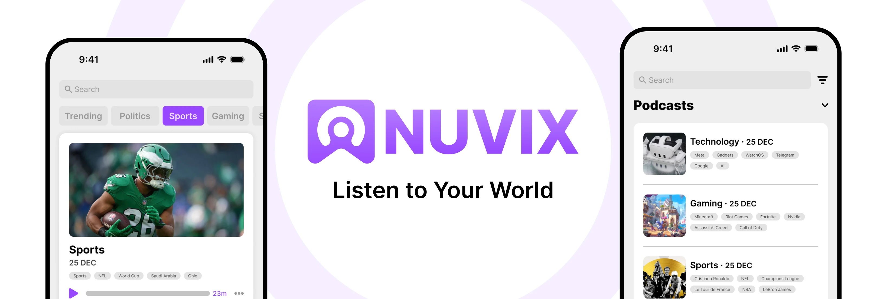
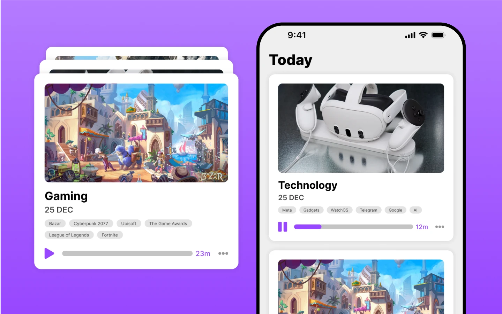
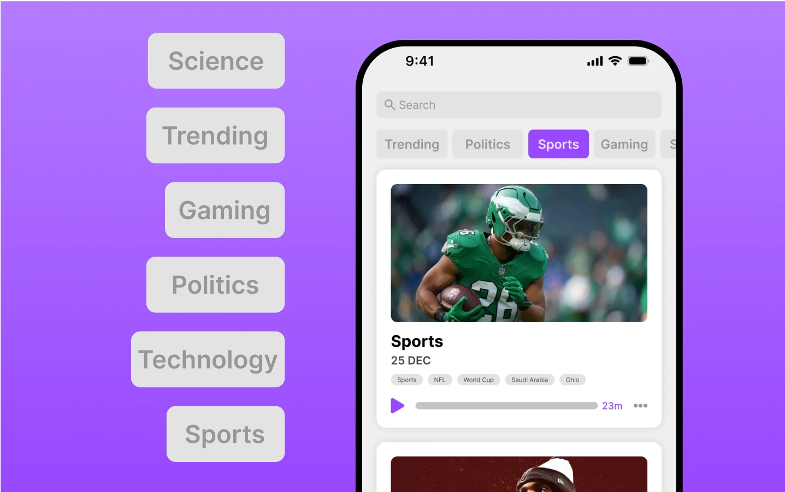
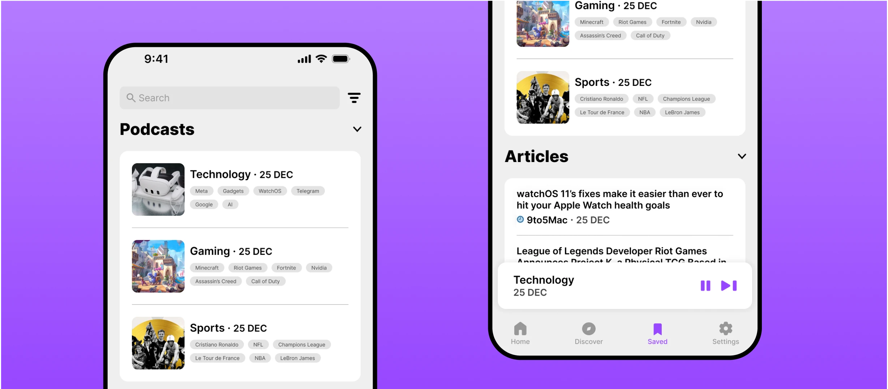
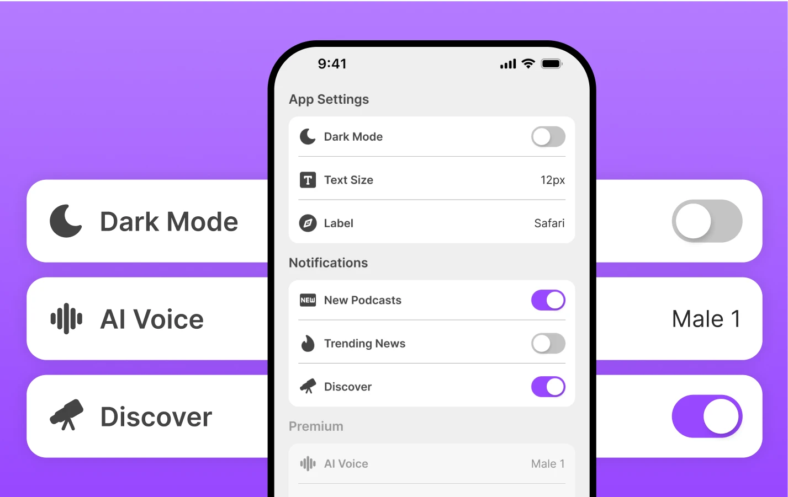

Context
This project involves the development of an AI-powered news podcast platform designed to deliver daily, personalized news summaries. The platform aggregates content from a variety of trusted sources, curating the most relevant news based on user preferences.
Through an intuitive interface, users can stay up to date with the latest developments in their favorite topics, all delivered in an engaging, audio format. The goal is to provide a streamlined and efficient news experience, allowing users to access the information that matters most to them, anytime and anywhere.
Users
Focused on busy users, commuters, and those seeking hands-free, personalized updates, offering an intuitive and inclusive experience.
Target Audience:
• Commuters & Multitaskers: Hands-free news on the go.
• Accessibility Users: Convenient for visual impairments.
• News Enthusiasts: Easy access to personalized updates.
• Seniors & Tech Beginners: Simple, user-friendly design.
• Students & Academics: Efficient content consumption.
• Tech Enthusiasts: Exploring AI-driven solutions.
Problem
• Staying informed on preferred topics during busy schedules requires more phone use, leading to distractions.
• Finding trustworthy sources and quality articles is time-consuming and inefficient.
• These challenges make it harder to stay updated without compromising focus and productivity.
• Users spend an average of 4 hours and 30 minutes daily consuming content, impacting productivity and quality time.
Solution
• Trustworthy Sources: Curates reliable news outlets for credible information.
• Personalized Topics: Focuses on user preferences to save time.
• AI Summarization: Condenses multiple sources into concise articles.
• Audio Delivery: Converts news to natural, podcast-style audio.
• Full Access: Links to complete articles for in-depth reading.
Priorities
The MVP is all about reducing screen time by using AI to turn news into short, easy-to-digest podcasts. To avoid any FOMO, it also offers a custom page where users can save articles and podcasts, making it easy to catch up whenever it suits them.
Trust is at the heart of the app, so ensuring accurate AI summaries is a top priority. A report button lets users flag any mistakes, helping keep the content reliable and high-quality.
Design
The design of the app will prioritize ease of use and accessibility for all types of users. With a focus on simplicity and intuitiveness, the interface will ensure that users, regardless of their technical experience or background, can effortlessly navigate the app.


Podcast Interface Design
• Card Design: Each episode will be presented in a card layout, displaying the title, date, and relevant tags for easy identification.
• "Skip News" Button: Allows users to bypass specific topics, creating a personalized listening experience.
• Intuitive Navigation: A simple design that makes it easy for users to find and access the content that interests them most.
Now Playing Page Design
• Clickable Source: Access the full article directly within the app.
• Media Controls: Easy-to-use buttons for pausing, skipping, or adjusting playback.
• Speed Control: Adjust playback speed to suit personal preferences.
• Sleep Timer: Set a time for the podcast to automatically stop.


Saved for Later Section
• Content Organization: Distinguishes between saved articles and podcasts.
• Filter & Search Options: Browse by topics, dates, or tags for efficient content discovery.
• Streamlined Access: Quickly revisit saved content as your library grows.
Discovery Page Design
• Search Bar: Easily find topics, articles, and podcasts of interest.
• Unfollowed Topics: Curated list of topics to explore new areas of interest.
• Top Global News: Highlighting trending stories with filter options by specific topics.

Settings Page Design
The Settings page offers a customizable interface to enhance user comfort and accessibility, including features like Night Mode, adjustable text size, and premium options such as different voices, custom app icons, themes, unlimited following topics, and a homescreen widget player.
Key Performance Indicators
Increase User Base
• Number of Downloads
• Conversion Rate (from app store visits to downloads)
• Cost Per Acquisition
Boost Engagement and Retention
• Daily Active Users / Monthly Active Users
• Session Duration
• Retention Rate (7-day, 30-day)
Ensure App Quality and User Satisfaction
• Crash-Free Sessions Percentage
• Net Promoter Score
• User Ratings and Reviews
Monetization
• Subscription Conversion Rate
• Average Revenue Per User
• Churn Rate